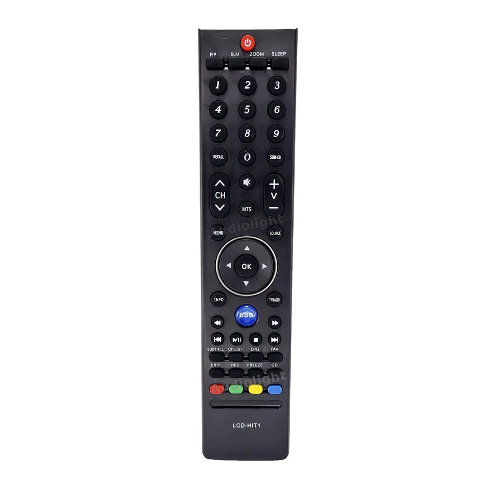
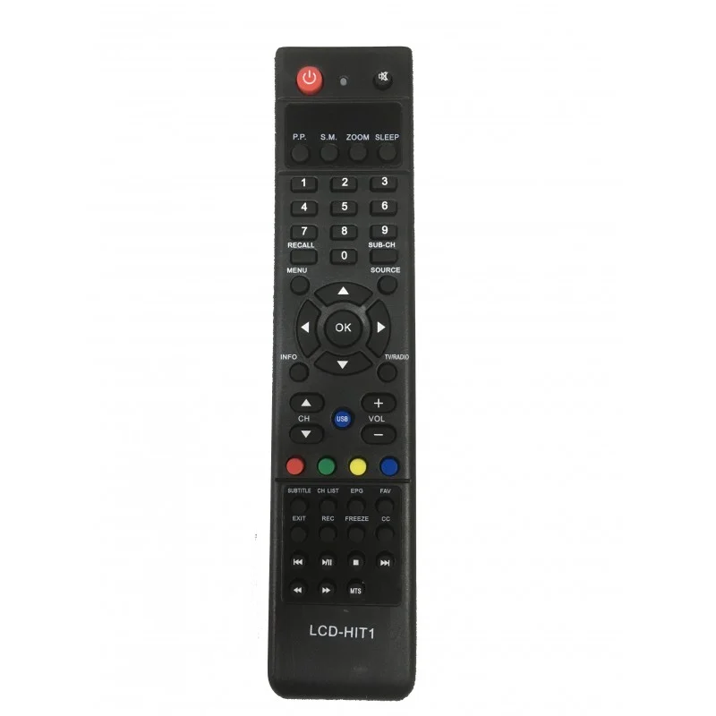

<!-- NOBLEX - HITACHI- SANYO -JVC - PHILCO  -->
            <div class="mb-8">
                <h2 class="text-2xl font-semibold mb-4 custom-bg"> NOBLEX - HITACHI- SANYO -JVC - PHILCO  </h2>
                <div class="horizontal-scroll">
                    <div class="item p-2">
                        
                        <p class="mt-2 text-center">616</p>
                    </div>
                    <div class="item p-2">
                        
                        <p class="mt-2 text-center">616 ALT</p>
                    </div>
                    <!-- Más controles -->
                </div>


                <br/><br/><br/><br/>
                <footer>
                    <p><strong>MODELOS COMPATIBLES CONOCIDOS:  </strong>  
                        HITACHI CDH-LE32FD06 , HITACHI CDH-LE42FD08 , HITACHI CDH32-DIGS04 , NOBLEX 32LC837HT , NOBLEX 32LC841HT , NOBLEX 42LC830FT , NOBLEX 24LD839FT , PHILCO PLD2412FT
                         , PHILCO PLH3241T , SANSEI TLS1132TU , SANYO LCE24XF9T , NOBLEX 24LD839FT, JVC LT-24DR530</p>
                </footer>
            </div>
